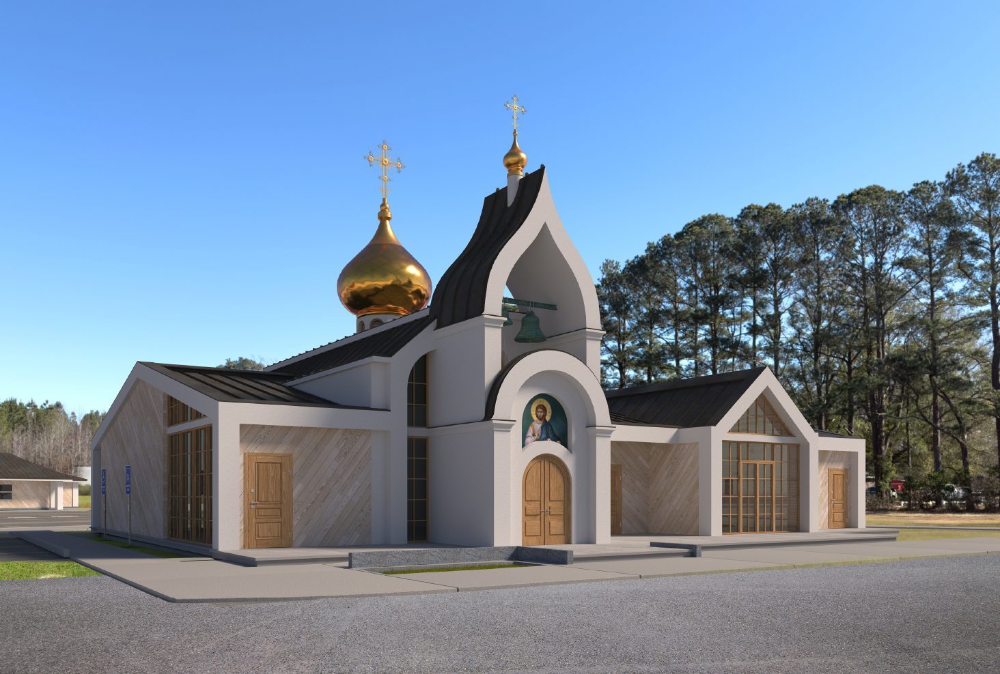
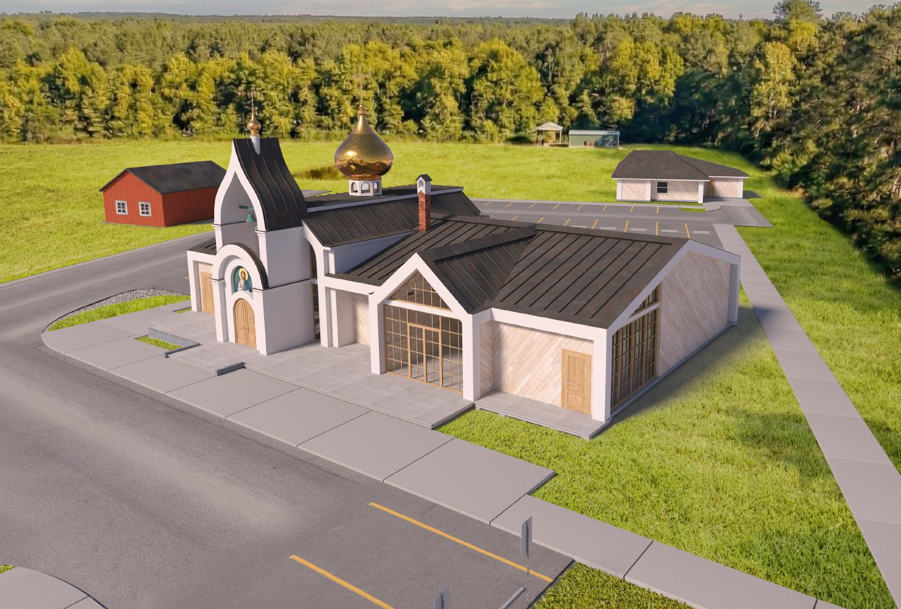
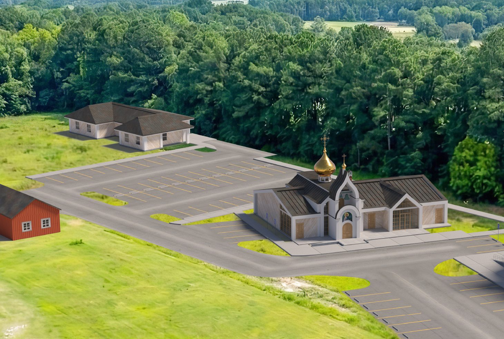

{{ nm }}
{% if nt and nt != "" %}{{ nt }}{% endif %}{% if it.price %}${{ it.price }}{% endif %}{% if it.sold_out %}Нет в наличии{% elsif it.link and it.link != "" %}Купить{% endif %}
Русская Православная Церковь Заграницей · Вирджиния
{{ site.data.texts.lead_ru }}

Расписание богослужений
Время местное, по Восточному побережью США. Исповедь в субботу вечером и в воскресенье перед литургией.
Ближайшие праздники и службы
Записки и свечи
Подайте записку, и её прочитают на ближайшем богослужении. Пишите имена только крещёных в Православной Церкви, в родительном падеже: Иоанна, Фотинии.
Поминовение на литургии. На проскомидии священник вынимает из просфор частицы за живых и усопших, а в конце литургии погружает их в Святую Чашу с молитвой об омытии грехов поминаемых.
Молебен — прошение к Господу, Богородице или святым о милости, или благодарение за полученные блага. Панихида — заупокойная служба о усопших.
Свеча. Послушники поставят вашу свечу на ближайшей службе: малая $2, средняя $4, большая $7.
Таинства и требы
Платы за таинства нет: суммы ниже — рекомендуемые пожертвования, жертвуйте по силам. Священник может приехать домой, в больницу, дом престарелых, похоронный дом или на кладбище в поминальные дни.
Трижды погружение в воду с призыванием Отца, и Сына, и Святого Духа.
Бог даёт супругам, обещающим верность друг другу, благодать единодушия для христианской жизни.
Помазание елеем с молитвой об исцелении немощей душевных и телесных. Можно пригласить священника домой или в больницу.
Для тех, кто болен или не может прийти в храм.
Заупокойный чин, которым Церковь провожает усопшего в вечную жизнь. Священник может приехать в похоронный дом.
Панихиду можно заказать и на кладбище в особые поминальные дни.
Священник приедет к вам.
Позвоните отцу Сергию: {{ site.data.contacts.priest_phone }}, или напишите на {{ site.data.contacts.priest_email | replace: "@", " [at] " }}.
Строительство
В 2021 году приход купил участок земли в Чесапике, 3617 S. Battlefield Blvd. Там будут храм, трапезная, воскресная школа, библиотека и залы для бесед.
Сбор на строительство храма
Собрано 5%. Осталось $1 418 198.


Следующий этап
Сейчас мы собираем средства на первую очередь: часовню с колокольней, приходской зал и книжную лавку. Когда она будет построена, на этом же участке начнётся строительство большого собора.
На видео показан весь замысел: каким станет участок в Чесапике, с собором и всеми постройками.
Проект: Александр Молодин, архитектор православных храмов.
Пожертвования
Приход живёт на пожертвования. Спаси Господи всех, кто помогает!
Церковная лавка
{{ shop.intro_ru }}
{% endif %}Оплата картой через Square. Заказ можно забрать в храме после службы или получить по почте.{% if shop.store_url and shop.store_url != "" %} Все товары лавки →{% endif %}
О приходе
Богослужения проходят в здании часовни святого Феодора на Granby Street в Норфолке.
Святыни храма
В храме хранятся частицы мощей этих святых.
Духовенство
Настоятель с 12 августа 2018 года
Интервью · Православие.ру, 2022«Тебе в Америке надо дело сделать»Отец Сергий о своём пути к служению в Америке и о жизни прихода.Читать интервью →Новости прихода
Фотогалерея
Контакты
Соцсети
Последние публикации
Instagram
@st.josephofoptina
Фото со служб и праздников прихода.
WhatsApp
Группа прихода
Объявления, расписание и новости прихода прямо в телефоне.
Вступить в группуРассылка прихода
Новости и расписание на почту
Раз в неделю: ближайшие службы, праздники и новости прихода. Отписаться можно в любой момент.
ПодписатьсяПрошлые выпуски
{% for i in nls limit:5 %}- {{ i.ru | default: i.title }}
{% endfor %}
{% if nls.size > 5 %}Ещё выпуски ({{ nls.size | minus: 5 }})
{% for i in nls offset:5 %}- {{ i.ru | default: i.title }}
{% endfor %}